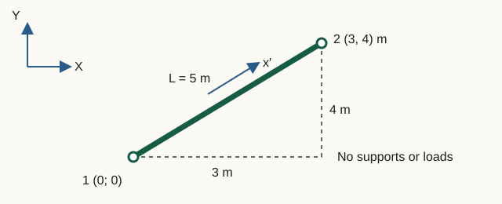

Stiffness and mass matrices
A finite element has two main matrices: the stiffness matrix relates nodal displacements to internal nodal forces, while the mass matrix relates nodal accelerations to inertial forces. Before assembly, both matrices can be checked independently for size, symmetry, rank, units and rigid-body behavior.
From a continuous element to nodal matrices
A real member has a continuous displacement field: its value can be found at any point along the length. A finite element replaces this infinite set of unknowns with a few nodal degrees of freedom qe. Displacements between nodes are interpolated using predefined shape functions:
u(x) = N(x) qe
The choice of N(x) determines the displacement distribution inside the element. The matrices follow by substituting this approximation into strain energy and kinetic energy expressions:
Ke = ∫V BTDB dV, Me = ∫V ρNTN dV, ε = Bqe
For a two-node type 112 member, axial displacement is interpolated linearly. With ξ = x/L:
u(x) = (1 − ξ)u′1 + ξu′2
The axial strain ε = du/dx is therefore constant within the element. Here the operator B contains first derivatives of the shape functions. For a type 113 frame, axial displacement is also linear, but transverse deflection uses cubic Hermite functions:
v(x) = H1(x)v′1 + H2(x)θ1 + H3(x)v′2 + H4(x)θ2
In the bending part, the operator B contains second derivatives of the functions H. Thus the curvature κ = d²v/dx² and, for constant EI, the bending moment vary linearly along the length.
In the current elements, E, A, ρ and I are constant within each element. For type 112, the axial displacement approximation is linear—not every element property. The matrix form arises because a continuous field is expressed using a finite set of nodal values. Different shape-function orders, extra nodes or variable properties produce different coefficients Ke and Me.
Two points therefore do not reproduce an arbitrary deformed shape: they define the selected approximation. Subdividing a structure into more elements adds nodes and allows a more accurate description of displacement and strain distributions.
Plane truss member, type 112
In local axes, x′, y′ the element resists only changes in the distance between its nodes. The implementation retains both translational components at each node, so the local vector has four components.
k = EA/L
K_local = k · [ 1 0 -1 0
0 0 0 0
-1 0 1 0
0 0 0 0 ]Consistent mass distributes translational inertia between the two nodes:
M_local = ρAL/6 · [ 2 0 1 0
0 2 0 1
1 0 2 0
0 1 0 2 ]The coefficients 2 and 1 come from the integral ∫NTN dx. Off-diagonal terms are not artificial coupling: the motion of every interior point depends on the displacements of both nodes. This mass matrix is therefore consistent with the chosen shape functions.
For a free member, the rank of K is 1: only one linear combination of displacements produces axial strain. The other three independent modes—two translations and one infinitesimal rigid-body rotation—cause no axial elongation in the linear formulation. Their elastic strain energy is therefore zero.
Plane Euler–Bernoulli frame, type 113
A frame element combines axial stiffness and bending. The Euler–Bernoulli assumption neglects transverse shear deformation, so rotation is related to the derivative of deflection.
The postprocessor uses Hermite functions explicitly. The function sample113Displacements evaluates the four cubic functions H1…H4 and uses the values v′1, θ1, v′2, θ2 to interpolate transverse displacement at interior element points. These points define the curved shape in static, modal and transient views. The solver contains the same interpolation implicitly in the already integrated stiffness and mass coefficients.
Integrating derivatives of these shape functions gives the characteristic bending coefficients 12, 6, 4 and 2 in the stiffness matrix:
a = EA/L, b = 12EI/L3, c = 6EI/L2, d = 4EI/L, e = 2EI/L
K_local = [ a 0 0 -a 0 0
0 b c 0 -b c
0 c d 0 -c e
-a 0 0 a 0 0
0 -b -c 0 b -c
0 c e 0 -c d ]In createStructuralElement.m the standard consistent mass matrix is used:
M_local = ρAL/420 ·
[ 140 0 0 70 0 0
0 156 22L 0 54 -13L
0 22L 4L² 0 13L -3L²
70 0 0 140 0 0
0 54 13L 0 156 -22L
0 -13L -3L² 0 -22L 4L² ]The same cubic deflection interpolation is used in kinetic energy, giving coefficients 156, 54, 22L, 13L and the other terms of the consistent mass matrix.
A free frame element has three rigid-body modes: two translations and one rotation. Its 6×6 stiffness matrix therefore has rank 3.
Units and coefficient meanings
Matrices with rotational DOFs do not have one common physical unit for all entries. For example, force–displacement coupling has units N/m, while moment–rotation coupling has units N·m. Check each generalized-force/generalized-displacement pair individually.
| Coefficient | Dependence | Physical effect |
|---|---|---|
| EA/L | proportional to area and modulus; inversely proportional to length | axial extension |
| 12EI/L³ | decreases especially rapidly with length | transverse force due to deflection |
| 6EI/L² | couples deflection and rotation | force and moment coupling |
| 4EI/L, 2EI/L | rotational diagonal and cross terms | bending moments |
| ρAL | element mass | translational inertia |
Five checks before assembly
- Size: 4×4 for type 112, 6×6 for type 113.
- Finiteness: no coefficient is
NaNorInf. - Symmetry: K = KT and M = MT.
- Rank: 1 for a free truss member, 3 for a free frame.
- Mass: under unit translation, the quadratic form rTMr equals ρAL.
A free element stiffness matrix must be singular. This is not an error: the element can move without deforming. After assembly and applying supports, the global matrix should become nonsingular; otherwise the model still has an unrestrained motion or an internal mechanism.
Laboratory 01. Stiffness and mass of an inclined element
The aim is to relate matrix coefficients to geometry and explain why the axial stiffness of an inclined member couples X and Y displacements.

Input data and notation
Nodes: (0, 0) and (3, 4) m. Truss element: A = 0.01 m², E = 200 GPa, ρ = 7850 kg/m³. Frame: A = 0.02 m², E = 210 GPa, ρ = 7850 kg/m³, I = 8·10⁻⁶ m⁴. No supports or loads are specified: the matrices of a single free element are studied.
Before running: hand calculations
- Find L, c = Δx/L, s = Δy/L and the axial member stiffness EA/L.
- Calculate three coefficients of its global matrix: K₁₁ = (EA/L)c², K₁₂ = (EA/L)cs, K₂₂ = (EA/L)s².
- Find the physical mass ρAL of each model.
Run in Octave
Run from the project root. The supplied function prints the results; you do not need to edit its code for this exercise.
addpath(pwd);
setup;
addpath(fullfile(pwd, "reference", "examples"));
r = example_01_element_matrices();Working with the results
- Compare the length and direction cosines with the beginning of the output. In
Truss local stiffnessfind the axial stiffness, and inTruss global stiffnessfind the three calculated coefficients. Explain the nonzero K₁₂. - Using the labels
Truss DOFsandFrame DOFslabel the matrix rows. In a frame element, the third and sixth components are rotations. - Examine rows 2 and 4 of the local truss stiffness and the diagonal of its mass matrix: why does zero transverse stiffness not imply zero mass?
- Run the commands below to find the mass when both nodes undergo equal X translation. Compare with ρAL. Use the formulas to predict how mass and axial stiffness change if the length doubles while the direction stays the same.
tx = [1; 0; 1; 0];
fx = [1; 0; 0; 1; 0; 0];
disp(tx' * r.truss.mass * tx);
disp(fx' * r.frame.mass * fx);L = 5 m, c = 0,6, s = 0,8. For the truss member, EA/L = 4·10⁸ N/m; K₁₁ = 1,44·10⁸, K₁₂ = 1,92·10⁸, K₂₂ = 2.56·10⁸ N/m. Masses: 392.5 kg and 785 kg. Doubling the length doubles the mass and halves the axial stiffness.
What to include in the report
Geometry calculations, a table of the three coefficients and two masses, and an explanation of X–Y coupling and the difference between transverse stiffness and mass.
Chapter source code
createStructuralElement.m— formulas for both matrices and input checks;tests/test_element_matrices.m— independent reference formulas and orientation checks;example_01_element_matrices.m— educational output of actual matrices.